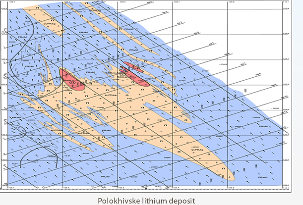

Polokhivske lithium deposit
Geological summary
Lithium ores are localized in 3 proven massifs.
- The first one is located in the rock part of the deposit. It is investigated 550m in length and up to a depth of 500 m. The thickness varies from 10 to 55 m.
- The second ore massif is explored in depth on 300 m.
- The third is investigated to a depth of 500 m and has a length of 350 m.
Massif resources
Approved reservesare (previously explored resources of petalite lithium ores) in the amount of more than 37 million tons.
- The first one is located in the rock part of the deposit. It is investigated 550m in length and up to a depth of 500 m. The thickness varies from 10 to 55 m.
- The second ore massif is explored in depth on 300 m.
- The third is investigated to a depth of 500 m and has a length of 350 m.
Massif resources
Approved reservesare (previously explored resources of petalite lithium ores) in the amount of more than 37 million tons.

Polokhivske lithium
deposit
deposit
- There is a fair quantity of highways and earthroads in the area.
- Economically, this region is a combination of extractive and processing industries.
- The granite, sand and clay minerals for brick making industry are produced.
- The region is heavily populated that ensures labor resources supply.
- Power supply is possible from the substation network that is part of “Dneprenergo”.
- Groundwater water-supply.
Geological summary
Lithium ores are localized in 3 explored massif:
- First ore massif - lies in the eastern part of deposit. It explored 550 m longwise and to a depth of 500 m. The power of array is changing from 10-0 m to 55 m. The depth and length of the ore deposit is not outlined.
- The second ore massif is explored in depth on 300 m.
- The third ore massif is explored to the depth of 500 m and has the length of 350 m.
Massif resources
Previously approved the explored resources and geometrize resources of petalite lithium ores is equal to 26 million of tones.
Annual ore processing is expected to 1 million 100 thousand.
Ore beneficiation is provided by gravity-flotation technology.
The further processing foresees the receiving of lithium carbonate, which is used for production of aluminium, in glass and ceramic
industries, and for receiving of hydroxide, chloride, lithium bromide and metal lithium.
Annual output of the plant, based on the previously explored resources
and annual productivity of ore mine is:
- Raw materials for rubber and technical industries (more than 94 thousands of tones per year)
- Raw materials for ceramic industry (more than 710 thousand of tonnes)
- Lithium carbonate (more than 18 thousands of tonnes)